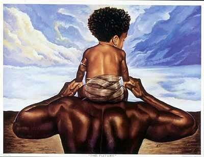
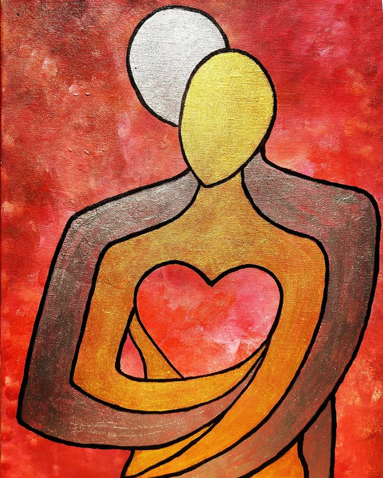

Strong social connections might help protect health and lengthen life. Scientists are finding that our connections to others can have powerful effects on our health. Whether with family, friends, neighbors, romantic partners, or others, social connections can influence our physiology. Look for ways to get make strong connections with more people.
2. Take care of yourself and others

Many of us will end up having to take care of somebody, and while it is important to do so, we must also first take care of ourselves. The stress and strain of taking care of other people can take a toll on your health. It’s important to find ways to care for your health while caring for others. Depending on your circumstances, some self-care strategies may be more difficult to carry out than others. Choose ones that work for you.
3. Do things with other people
Where you live, work, or go to school can have a big impact on how much you move and even how much you weigh. Being active with others in your community can have a positive effect on your health habits and create opportunities to connect. You can help your community create ways to encourage more physical activity.
4. Build Healthy Relationships

Strong, healthy relationships are important throughout your life. They can impact your mental and physical well-being. As a child you learn the social skills you need to form and maintain relationships with others. But at any age you can learn ways to improve your relationships. It's important to know what a healthy relationship looks like and how to keep your connections supportive.